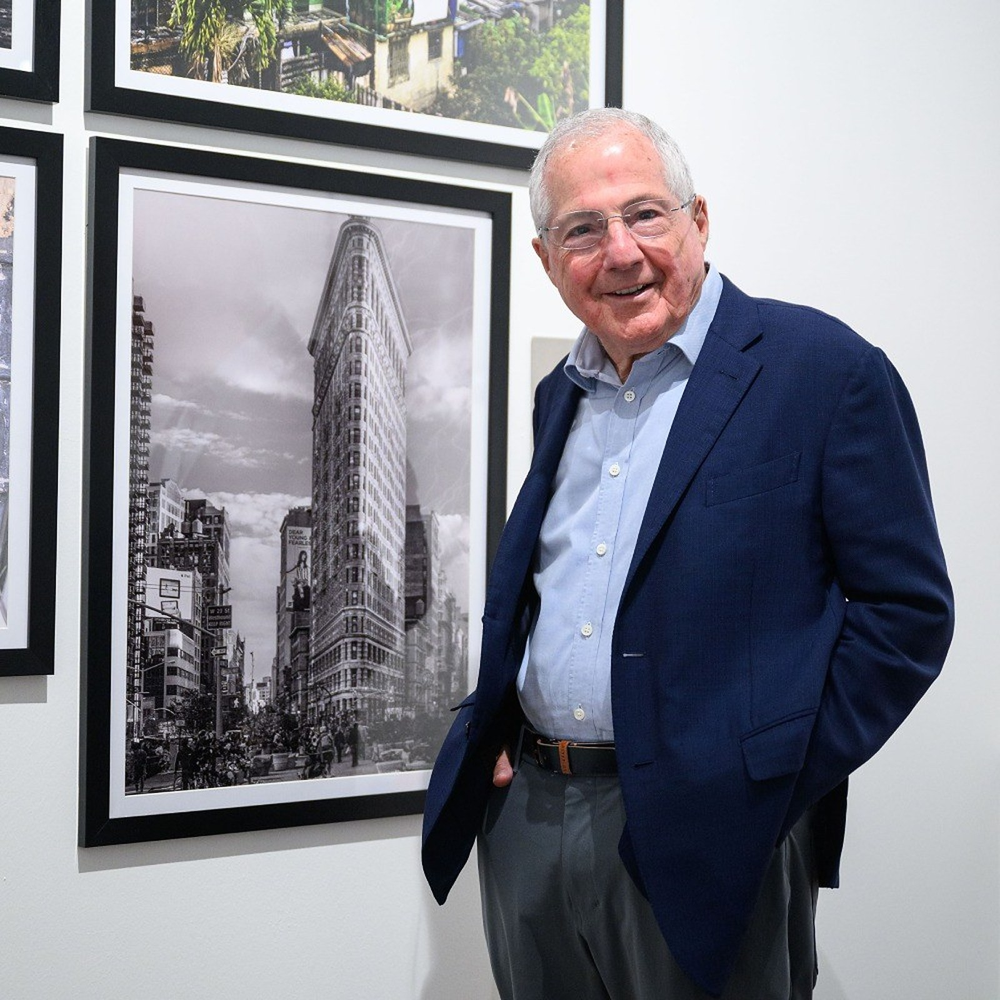

The Artist

Dr. Michael J. Gerson at Shades of Life, Singapore, 2025
A psychologist by profession. A photographer of strangers for more than fifty years.
Dr. Michael J. Gerson is a family psychologist practising in New York. He spends his working days with couples, families and children, and the rest travelling with a camera, from New York and London to Cuba, Tanzania, Eswatini and Georgia.
He photographs people unposed, reading the same non-verbal signals he attends to in his practice: expression, posture, the hands. He works with Sony full-frame mirrorless cameras.
Exhibitions
2025Shades of Life, solo exhibition. Artitude Galeria, Singapore
Press
2025Esquire Singapore, The Human Connection, According to Photographer, Michael Gerson
2025Expat Living Singapore, on Shades of Life